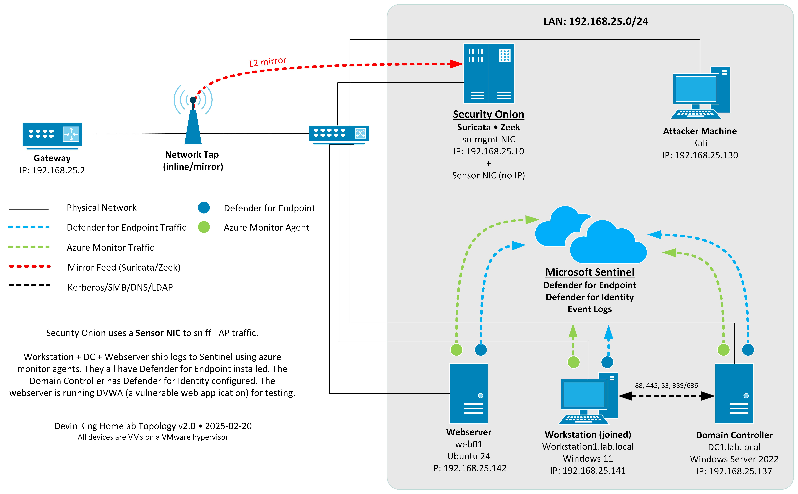

Hi, I'm
SOC Analyst | Threat Hunter
A fully instrumented 5-VM homelab running Microsoft Sentinel, Defender for Endpoint, Defender for Identity, Sysmon, and Security Onion — built to detect, investigate, and respond to real attack chains using custom KQL analytics rules, MITRE ATT&CK mapping, and multi-source alert correlation in Microsoft Sentinel and Defender XDR.

Click any image to zoom in